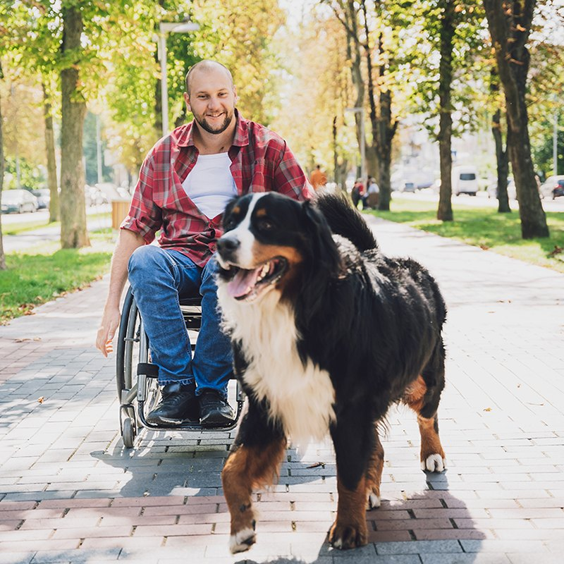

Compassion first
We treat every animal and every person with patience, dignity, and kindness.
Compassion, community, and a lot of dedicated people make our work possible.
Twin Cities Animal Rescue began when a handful of neighbors started fostering strays from their own kitchens and garages. They shared what they had: spare crates, extra blankets, and a belief that no animal should face the cold alone.
Word spread. More families opened their homes, local vets offered help, and the group became a registered nonprofit. Today we rescue animals from overcrowded shelters, emergency situations, and the street, then care for them until they are ready to go home.
We are still powered by neighbors. That is the part we are proudest of.

We treat every animal and every person with patience, dignity, and kindness.
We are open about our animals' needs, our finances, and our results so you always know where your support goes.
Rescue works best when neighbors work together, and we welcome people of every background and ability.
A good adoption lasts a lifetime. We take time to find the right fit for each animal and each home.
We turn caring into doing, one foster, one walk, and one adoption at a time.
We keep improving through training, feedback, and the guidance of veterinary professionals.
We could not do this alone. Thank you to the partners who share our mission. (Sample names for this project.)